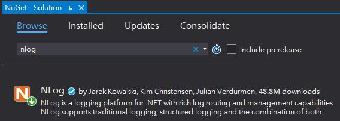
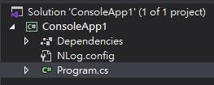
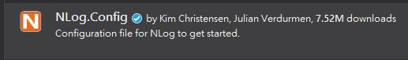
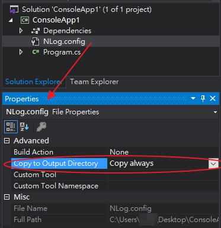
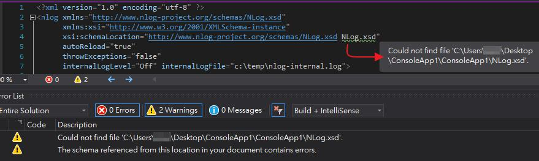
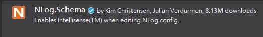
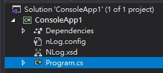
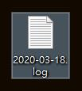
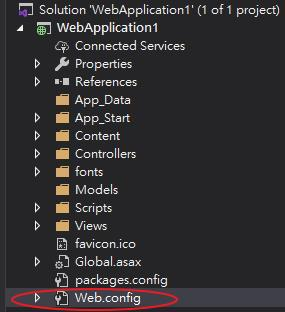

[NLog] NLog hello world
本文章目的在於做一個 NLog hello world 的專案，
不多做參數細部解說，相關請查閱 NLog 官網。
一、以 .NET Core 3.1 Console application 為例
1、於 NuGet 安裝 NLog
你可以使用 NuGet Package Manager Console 或是 Manage NuGet Packages for solution 方式安裝，二者擇一即可。
PM> Install-Package NLog

2、新增 nlog.config
新增 nlog.config 有兩種方式，二者擇一即可(檔名不分大小寫)，
一是自己寫 nlog.config 並放置如下檔案結構

nlog.config 預設的內容為
<?xml version="1.0" encoding="utf-8" ?> <nlog xmlns="http://www.nlog-project.org/schemas/NLog.xsd" xmlns:xsi="http://www.w3.org/2001/XMLSchema-instance" xsi:schemaLocation="http://www.nlog-project.org/schemas/NLog.xsd NLog.xsd" autoReload="true" throwExceptions="false" internalLogLevel="Off" internalLogFile="c:\temp\nlog-internal.log"> <!-- optional, add some variables https://github.com/nlog/NLog/wiki/Configuration-file#variables --> <variable name="myvar" value="myvalue"/> <!-- See https://github.com/nlog/nlog/wiki/Configuration-file for information on customizing logging rules and outputs. --> <targets> <!-- add your targets here See https://github.com/nlog/NLog/wiki/Targets for possible targets. See https://github.com/nlog/NLog/wiki/Layout-Renderers for the possible layout renderers. --> <!-- Write events to a file with the date in the filename. <target xsi:type="File" name="f" fileName="${basedir}/logs/${shortdate}.log" layout="${longdate} ${uppercase:${level}} ${message}" /> --> </targets> <rules> <!-- add your logging rules here --> <!-- Write all events with minimal level of Debug (So Debug, Info, Warn, Error and Fatal, but not Trace) to "f" <logger name="*" minlevel="Debug" writeTo="f" /> --> </rules> </nlog>
二是用 NuGet 安裝，NLog.Config 套件

不管你選何種方式產生 nlog.config，請記得 Copy to Ouput Directory 選 Copy always，

否則 NLog 不會動作。
3、安裝 NLog.Schema 套件
你可能會在你的 nlog.config 發現找不到 NLog.xsd 警告

請於 NuGet 安裝 NLog.Schema 套件，來取得 NLog.xsd 檔，

個人將 NLog.xsd 檔案放於如下檔案結構

完成後兩個警告就被解決了。
4、NLog hello world
前期準好了，開始進入主題做一個 NLog hello world 的專案。
nlog.config 改為
<?xml version="1.0" encoding="utf-8" ?> <nlog xmlns="http://www.nlog-project.org/schemas/NLog.xsd" xmlns:xsi="http://www.w3.org/2001/XMLSchema-instance" xsi:schemaLocation="http://www.nlog-project.org/schemas/NLog.xsd NLog.xsd" autoReload="true" throwExceptions="false" internalLogLevel="Off" internalLogFile="c:\temp\nlog-internal.log"> <targets> <target name="fatalfile" xsi:type="File" fileName="${baseDir}/${shortdate}.log" layout="${date}---${level}---${message}"/> </targets> <rules> <logger name="*" level="Fatal" writeTo="fatalfile" /> </rules> </nlog>
Program.cs 改為
using NLog;
namespace ConsoleApp1
{
class Program
{
private static Logger logger = LogManager.GetCurrentClassLogger();
static void Main(string[] args)
{
logger.Fatal("Hello World!!!");
}
}
}
執行後，
個人將 NLog 輸出至我的桌面，所以我的桌面會看到一個 log 檔，

其輸出的內容為
「2020/03/18 17:25:26.330---Fatal---Hello World!!!」
二、以 .NET Framework Web application 為例
主要流程大同小異
1、於 NuGet 安裝 NLog
2、新增 nlog.config
你可以使用原來的方式，把 nlog.config 檔案加到 Web application 專案目錄底下，
但我這一次使用的方式是將 nlog.config 的內容加到 Web.config 裡

Web.config 裡跟 nlog.config 內容有關的如下
<?xml version="1.0" encoding="utf-8"?> <!-- For more information on how to configure your ASP.NET application, please visit https://go.microsoft.com/fwlink/?LinkId=301880 --> <configuration> <configSections> <section name="nlog" type="NLog.Config.ConfigSectionHandler, NLog" /> </configSections> <nlog xmlns="http://www.nlog-project.org/schemas/NLog.xsd" xmlns:xsi="http://www.w3.org/2001/XMLSchema-instance" xsi:schemaLocation="http://www.nlog-project.org/schemas/NLog.xsd NLog.xsd" autoReload="true" throwExceptions="false" internalLogLevel="Off" internalLogFile="c:\temp\nlog-internal.log"> <targets> <target xsi:type="BufferingWrapper" name="bufferingDB" flushTimeout="5000" slidingTimeout="true" bufferSize="10"> <target name="DB" xsi:type="Database" dbProvider="System.Data.SqlClient" connectionString="server=DESKTOP-***\SQLEXPRESS;Database=testDB;user id=sa;password=***;"> <commandText> insert into dbo.NLogs (Logger, Level, Message) values (@Logger, @Level, @Message); </commandText> <parameter name="@Logger" layout="${logger}" /> <parameter name="@Level" layout="${level}" /> <parameter name="@Message" layout="${message:withException=false:exceptionSeparator=\r\n}" /> </target> </target> </targets> <rules> <logger name="*" writeTo="DB" /> </rules> </nlog> </configuration>
這裡我刻意加了 Target Wrappers 作範例，
把 Target Wrappers 拿掉，執行上也是沒問題的。
3、新增測試 DB
由於這次的 log 是要寫進 DB，所以要新增一個測試用 DB 與 Table
CREATE DATABASE testDB; GO USE testDB; GO CREATE TABLE NLogs ( [UID] [int] IDENTITY(1,1) NOT NULL, [Logger] [nvarchar](100) NULL, [Level] [nvarchar](10) NULL, [Message] [nvarchar](max) NULL ) GO
4、撰寫 Log 程式
你可以在程式的任何地方撰寫 Log 程式，
以我的例子，我將 Log 程式寫在 HomeController 如下
using NLog;
using System.Web.Mvc;
namespace WebApplication1.Controllers
{
public class HomeController : Controller
{
private static Logger logger = LogManager.GetCurrentClassLogger();
public ActionResult Index()
{
logger.Fatal("Hello World!!!");
return View();
}
}
}
到此 Log 範例就已經寫好了，程式執行後你可以去 DB 看 log 訊息有沒有寫入，
如果沒有的話，你可以將 nlog 的 throwExceptions 打開，如下
<nlog throwExceptions="true">
去找出那裡出問題。
參考資料：